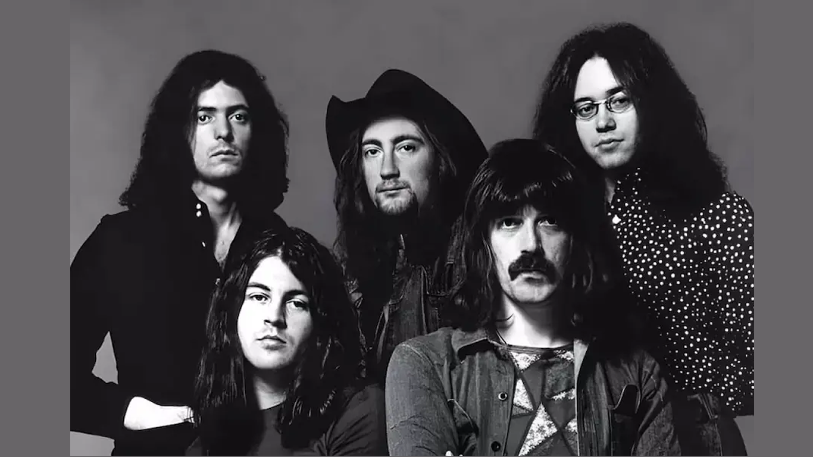

DEEP PURPLE
Deep Purple es una banda británica de hard rock formada en 1968 en Hertford, Reino Unido. Está considerada como una de las mejores bandas del mundo y pionera de dicho género, además de influir a las futuras bandas de rock y heavy metal junto a Black Sabbath y Led Zeppelin. La década de su éxito fue de 1980 a 1990.

Integrantes
- David coverdate (Vocalista)
- Ritchie blackmore (Guitarra)
- Ian Gillan (Guitarra Armónica)
- Ian Paice (Bateria)
- Simon Mcbride (Guitarra)
- Steve Morse (Guitarra)
- Glenn Hughes (Bajo)
- Roger Glover (Bajo)
Canciones más exitosas
- Smoke on the wáter
- Soldier of fortune
- Hush
- Highway star
- Perfect strangers
- Burn
- Strange kind of woman
- Child in time